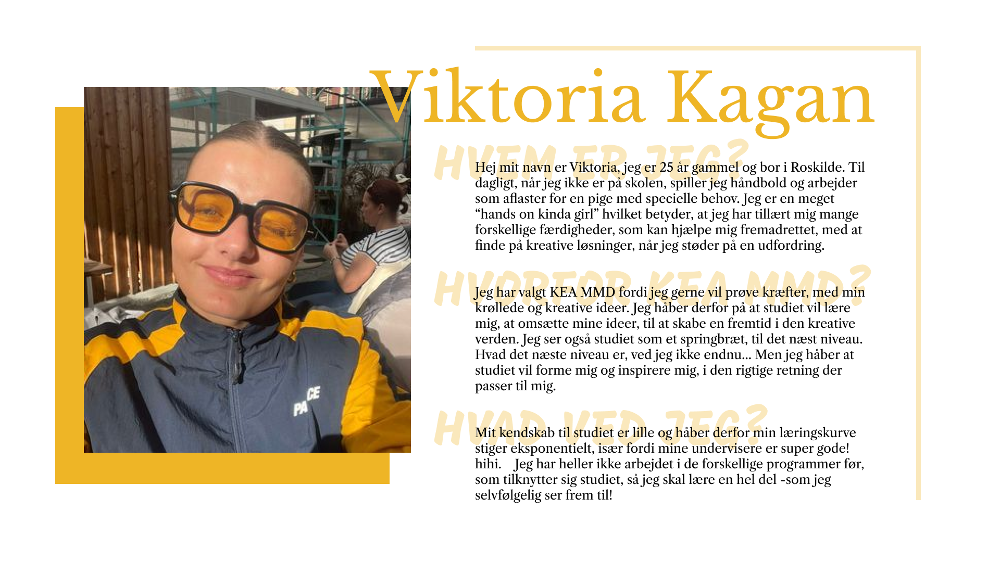

VIDEO
Jeg har lært at samarbejde i et team om at planlægge og producere en kort video, hvor alle bidrager med idéer og kreative input. Jeg har fået erfaring med at arbejde med multimedieproduktion, herunder rettighedssikret musik, korrekt kreditering og brug af egne materialer. Opgaven har også givet mig indsigt i at følge specifikke krav til afleveringsformat og navngivning, samtidig med at vi har haft mulighed for at udfolde os kreativt.
VIDEO →PRÆSENTATIONSKORT
Jeg har lært, hvordan man opretter et digitalt præsentationskort ved at bruge grundlæggende værktøjer på computeren. Det har givet mig erfaring med at installere og bruge nogle af de programmer, som jeg skal bruge på uddannelsen. Opgaven har hjulpet mig med at præsentere mig selv kort og reflektere over mine mål på studiet. Jeg har også fået erfaring med at aflevere opgaver på Itslearning og arbejde inden for en tidsramme.
